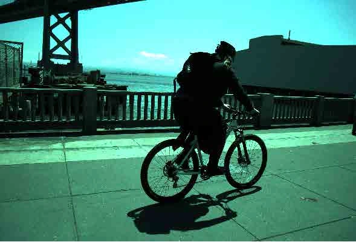
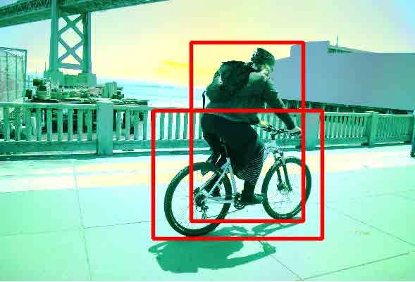
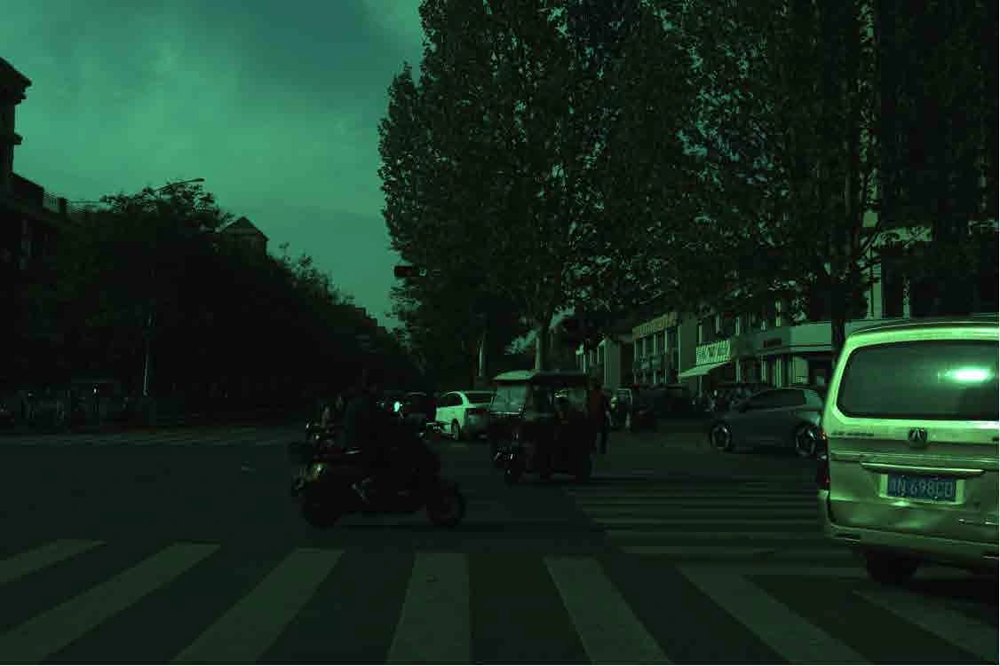
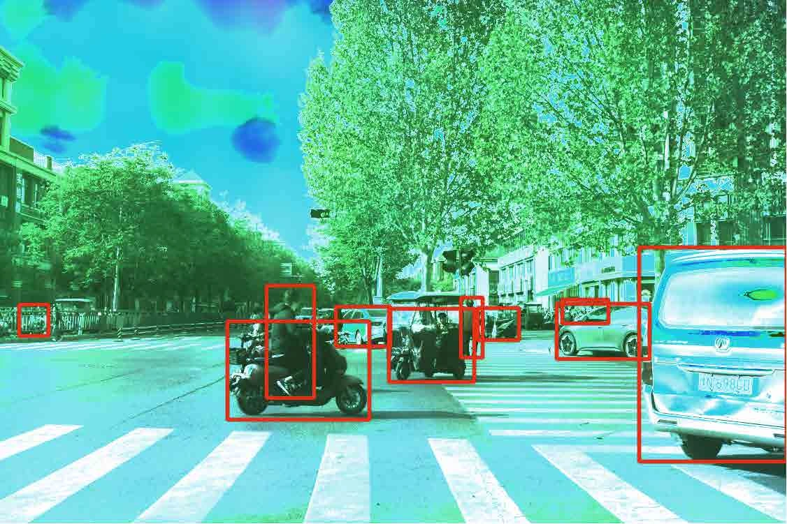
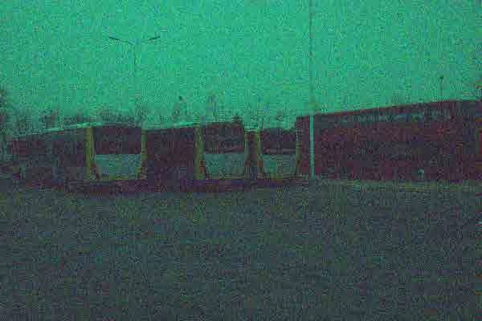
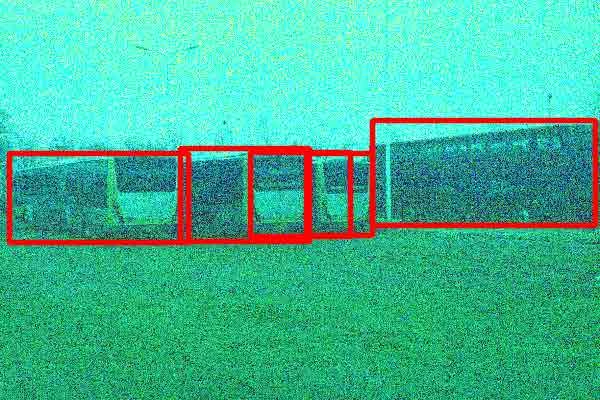
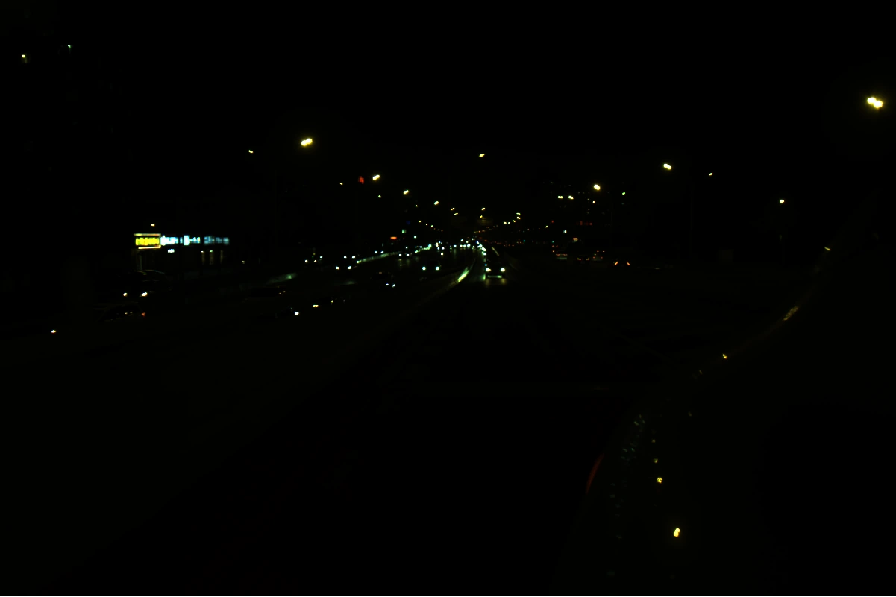
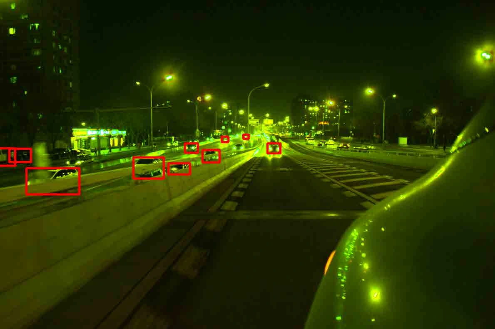
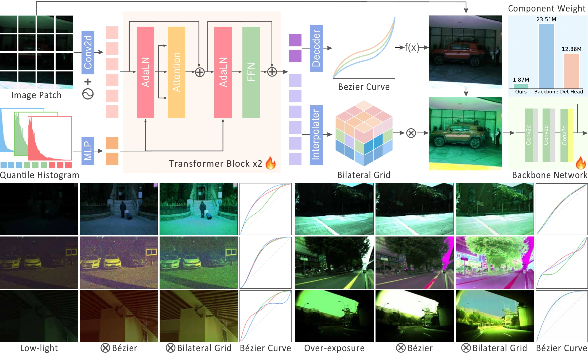
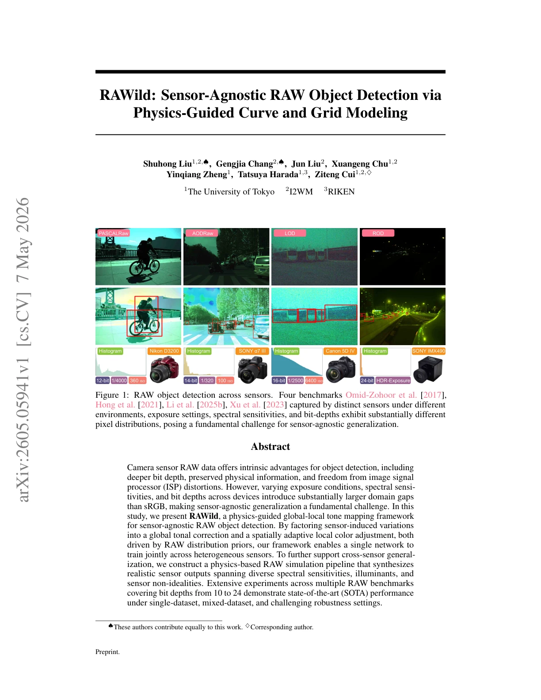

NeurIPS 2026
RAWild: Toward Sensor-Agnostic RAW Object Detection via Physics-Guided Curve and Grid Modeling
The filmRAWild in seventy-two seconds, on the same beat as this page.
01The problem
Every sensor sees the world differently.
RAW sensor data keeps what an image signal processor throws away: deeper bit depth, a linear physical signal, and none of the ISP's nonlinear distortions.
But exposure, spectral sensitivity and bit depth vary so much across devices that the domain gap between RAW datasets is far larger than between sRGB ones. A detector trained on one camera's RAW stumbles on another's.








Four RAW benchmarks, four sensors (Figure 1 of the paper). Each panel opens on the recorded RAW; hover or tap it to see the same scene rendered for people. Experiments span sensors from 10 to 24 bits.
02The method
A global curve, then a local grid.
RAWild is a lightweight adapter in front of the detector backbone. Guided by the statistics of the RAW image itself, it predicts two physically meaningful operators — then hands the backbone an image it can read.
-
1Global Bézier curve
One monotone curve per channel, pinned to pure black and white, absorbs exposure, sensor non-linearity and per-channel sensitivity. Every image gets its own curve.
-
2Local bilateral grid
A compact grid of 3×3 color matrices — (H/16)×(W/16) cells × 8 luminance bins — corrects mixed illumination, lens shading and crosstalk. Each pixel picks its matrix by position and brightness.
-
3Histogram guidance
A differentiable 64-quantile descriptor per channel steers both predictions through AdaLN, so one network adapts to bit depth, white balance, exposure and dynamic range.
Inside the adapter
Follow one pixel through the curve and into the grid.
Stage outputs exported from RAWild models (ROD and LOD checkpoints) for illustration. The linear input is shown as recorded, without gamma — at night it is almost black. “Where the grid acts” marks the pixels the local grid changes most; left alone, the probe visits those regions by itself.

03Results
What the baselines miss.
Real detections from RAWild and each baseline on the same frames, all drawn at one score threshold, 0.5. Dashed boxes are the ground truth.
Mixed-sensor detection
One network, every sensor.
Multi-RAW mixed-sensor benchmark
35.28mAP@50
+9.25over the strongest baseline
- LOD · ResNet-50
- 64.0869.09
- mAP@50 · strongest baseline Dr.RAW → RAWild
- ROD · ResNet-50
- 47.2055.41
- mAP@50 · strongest baseline Dr.RAW → RAWild
- RAW ADE20K · segmentation
- 9 / 9
- best mIoU in every setting · 3 exposures × MiT-B0/B3/B5
mAP@50 in percent. Multi-RAW from Table 2, LOD and ROD from Table 1 (ResNet-50), segmentation from Table 7 of the paper.
All numbers from the paperTables 1, 2, 3 and 7
04The paper
Read the research.

NeurIPS 2026
RAWild: Toward Sensor-Agnostic RAW Object Detection via Physics-Guided Curve and Grid Modeling
The University of Tokyo · I2WM · RIKEN
Cite this work
@inproceedings{liu2026rawild,
title = {RAWild: Toward Sensor-Agnostic RAW Object Detection via
Physics-Guided Curve and Grid Modeling},
author = {Liu, Shuhong and Chang, Gengjia and Liu, Jun and Chu, Xuangeng
and Zheng, Yinqiang and Harada, Tatsuya and Cui, Ziteng},
booktitle = {Advances in Neural Information Processing Systems (NeurIPS)},
year = {2026}
}